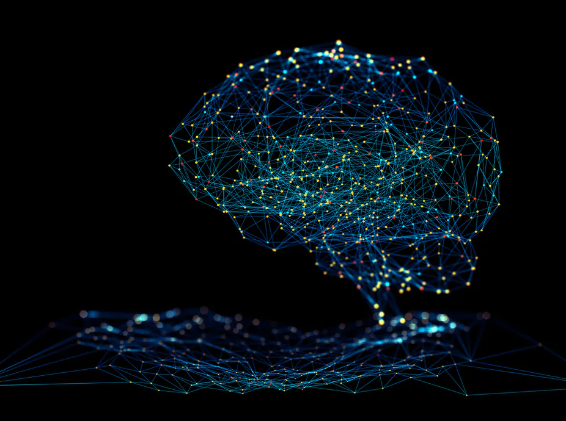

Определение
Нейронная сеть(также искусственная нейронная сеть, ИНС) — математическая модель, а также её
программное или аппаратное воплощение, построенная по принципу организации и функционирования
биологических нейронных сетей — сетей нервных клеток живого организма. Это понятие возникло
при изучении процессов, протекающих в мозге, и при попытке смоделировать эти процессы. Первой
такой попыткой были нейронные сети У. Маккалока и У. Питтса.
Нейронные сети не программируются в привычном смысле этого слова, они обучаются. Возможность
обучения — одно из главных преимуществ нейронных сетей перед традиционными алгоритмами.
Технически обучение заключается в нахождении коэффициентов связей между нейронами. В процессе
обучения нейронная сеть способна выявлять сложные зависимости между входными данными и выходными,
а также выполнять обобщение. Это значит, что в случае успешного обучения сеть сможет вернуть
верный результат на основании данных, которые отсутствовали в обучающей выборке, а также
неполных и/или «зашумленных», частично искажённых данных.
Типи сетей
Виды нейронных сетей, которые применяются для решения практических задач
- Нейронные сети прямого распространения
- Рекуррентные нейронные сети
- Радиально-базисные функции
- Самоорганизующиеся карты
Задачи
Этапы решения задач.
- Сбор данных для обучения
- Подготовка и нормализация данных
- Выбор топологии сети
- Экспериментальный подбор характеристик сети
- Экспериментальный подбор параметров обучения
- Собственно обучение
- Проверка адекватности обучения
- Корректировка параметров, окончательное обучение
- Вербализация сети с целью дальнейшего использования
Задачи
- Предсказание финансовых временных рядов
- Психодиагностика
- Хемоинформатика
- Нейроуправление
Применения в экономике
Алгоритмы нейронных сетей нашли широкое применение в экономике. С помощью нейронных
сетей решается задача разработки алгоритмов нахождения аналитического описания
закономерностей функционирования экономических объектов (предприятие, отрасль, регион).
Эти алгоритмы применяются к прогнозированию некоторых «выходных» показателей объектов.
Применение нейросетевых методов позволяет решить некоторые проблемы экономико-
статистического моделирования, повысить адекватность математических моделей,
приблизить их к экономической реальности. Поскольку экономические, финансовые и
социальные системы очень сложны и являются результатом человеческих действий и
противодействий, создание полной математической модели с учётом всех возможных действий
и противодействий является очень сложной (если разрешимой) задачей.
В системах подобной сложности естественным и наиболее эффективным является использование
моделей, которые напрямую имитируют поведение общества и экономики. Именно это способна
предложить методология нейронных сетей.